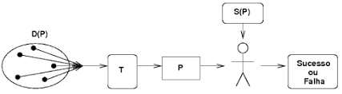
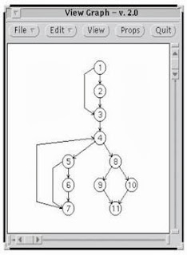
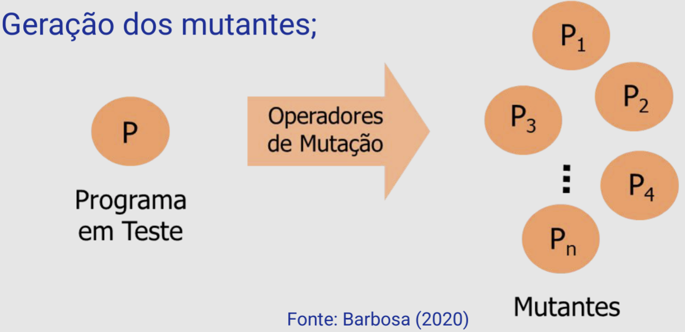
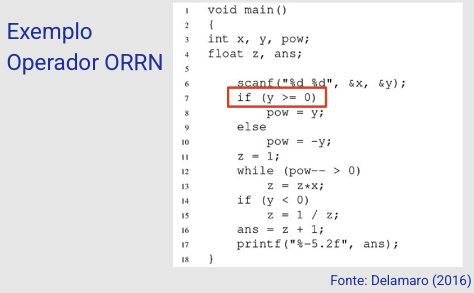
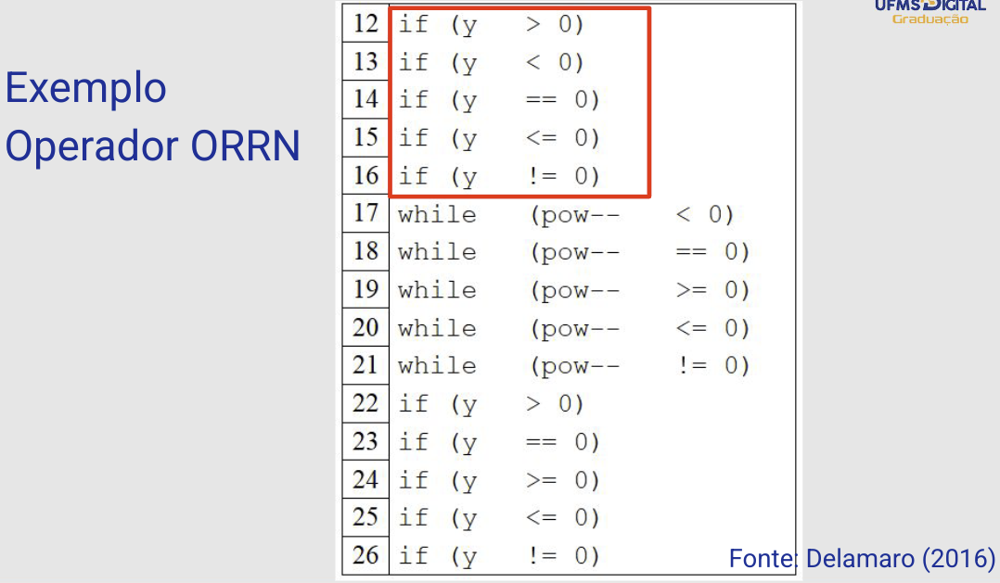
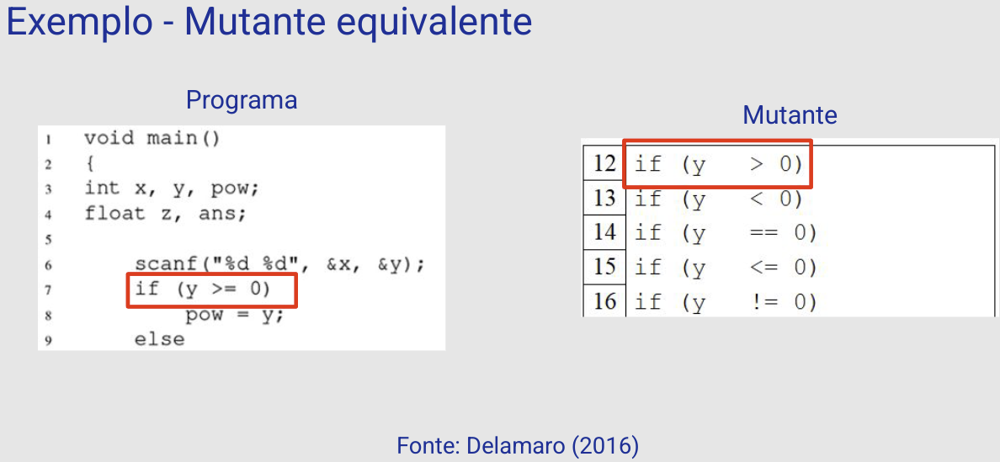

Disciplinas
VERIFICAÇÃO, VALIDAÇÃO E TESTE DE SOFTWARE. Concluído
Materiais
[UFMS Digital] Verificação, Validação e Teste de Software - Módulo 2 - Unidade 1
Prof° ministrante: Leonardo Souza Silva.
Em nossa última aula.
- Teste é o processo de executar um programa com a intenção de encontrar erros;
- Deve ser conduzido de maneira sistemática;
- Terminologia:
- Defeito, Erro e Falha;
Mostram que o software tem erro, mas não provam que ele nunca falhará. Testes bem planejados podem remover em média 60% dos defeitos de um programa.
Atividade de Teste

...
Defeitos no processo de desenvolvimento.
- Gerados na comunicação e na transformação de informações;
- A maioria se encontra em partes do código raramente; executadas;
- Quanto mais cedo o defeito for revelado, menor o custo de correção do defeito e maior a probabilidade de correção adequada.
Fases do Teste de Software.
- Teste de Unidade;
- Teste de Integração, e
- Teste de Sistema.
Etapas do Teste de Software.
- Planejamento;
- Projeto de Casos de Teste;
- Execução do Programa com os Casos de Teste;
- Análise dos Resultados.
Caso de Teste.
- Especificação de uma entrada para um software e a correspondente saída esperada.
- Entrada — Conjunto de dados necessários para execução;
- Saída esperada — Resultado da execução do programa.
- Bom caso de teste:
- Aquele que tem alta probabilidade de revelar um erro.
Teste Funcional - Critérios.
- Particionamento de Equivalência;
- Análise do Valor Limite;
- Grafo Causa-Efeito;
- Error guessing;
- Outros
Projeto de Casos de Teste.
- Pode ser tão difícil quanto o projeto do produto;
- Bom mecanismo para a prevenção de defeitos;
- Eficaz em identificar erros;
- Características desejáveis:
- Deve ser finito e ter custo de aplicação razoável.
- Condução de maneira sistemática e planejada.
- Técnica - como devemos aplicar os testes?
- Critério - quando devemos parar de aplicar os testes.
Técnicas e Critérios de Teste.
- Necessário usar um subconjunto reduzido de D(P);
- Um subdomínio de D(P) é um subconjunto do domínio de entrada que contém "dados semelhantes".
- Exemplo → Rotina que valida um CPF.
- Ao estabelecer subdomínios de D(P) reduzimos o conjunto T ao mesmo tempo, em que representamos seus elementos.
- Outra alternativa: teste aleatório.
- Grande número de casos de teste;
- Representação probabilística.
Critérios de Teste de Software.
- Funcional:
- Requisitos funcionais.
- Estrutural:
- Estrutura interna do programa.
- Baseado em Erros (ou Defeitos):
- Erros mais frequentes cometidos durante o processo de desenvolvimento.
Teste Funcional.
- Caixa-preta (do inglês: Black Box).
- Conhecendo a especificação de função de um produto executa e demonstra a correta operação baseado somente na especificação, não se preocupando com aspectos de lógica interna.
- Procurar descobrir:
- Funções incorretas ou ausentes, erros de interface, erros nas estruturas de dados ou no acesso a BD, dentre outros.
- Particionamento de Equivalência;
- Análise do Valor Limite;
- Grafo Causa-Efeito;
- Error guessing;
- Outros
- Identificar classes de equivalência;
- Condições de entrada; e
- Classes válidas e inválidas.
- Definir os casos de Teste:
- Enumerar as classes de equivalência;
- Casos de teste para as classes válidas; e
- Casos de teste para as classes inválidas.
Teste Estrutural.
- Caixa-branca (do inglês: White Box).
- Conhecendo os detalhes internos de um produto, testes são executados para verificar a execução de todas as estruturas que compõe os caminhos lógicos.
- Casos de teste visam percorrer todos os caminhos internos possíveis de um programa.
- Verificam condições e/ou laços, e
- Definições e uso das variáveis.
- Maioria dos critérios utiliza uma representação de programa
- Grafo de Fluxo de Controle (GFC) ou Grafo de Programa.
- Grafo é uma estrutura matemática composta por vértices (nós) e arcos (arestas).
- Grafo de Programa → G = (N, E, s)
- N representa o conjunto de nós,
- E conjunto de arcos,
- s o nó de entrada.
- Nós → Blocos “indivisíveis”
- Sem desvio para o meio do bloco;
- Uma vez que o primeiro comando do bloco é executado, os demais comandos são executados sequencialmente.
- Arestas ou Arcos:
- Representam o fluxo de controle entre os nós.

...
Teste Estrutural — Critérios- Baseados em Fluxo de Controle
- Todos-nós, todas-arestas e todos-caminhos.
- Baseados em Fluxo de Dados
- Rapps e Weyuker
- Todas-defs, todos-usos, todos-p-usos, dentre outros.
- Maldonado
- Todos-potenciais-usos, todos-potenciais-usos/DU, outros.
- Baseados em Complexidade
- Critério de MacCabe.
Teste Baseado em Erros (ou Defeitos)
- Defeitos típicos são usados na definição dos requisitos de teste.
- O programa a ser testado é alterado diversas vezes, criando um conjunto de programas alternativos (mutantes).
- Defeitos são inseridos no programa original.
- Requisitos são derivados a partir dos erros frequentemente cometidos durante o processo de desenvolvimento.
- Casos de teste devem mostrar diferença de comportamento entre o programa original e os programas mutantes.
- Critérios
- Semeadura de Erros,
- Teste de Mutação
- Análise de Mutantes (unidade);
- Mutação de Interface (integração).
- Hipótese do Programador Competente
- Um programa, produzido por um programador experiente, está correto ou está “próximo” do correto (desvios sintáticos).
- Efeito do Acoplamento
- Casos de teste capazes de revelar erros simples, podem revelar erros mais complexos.
- Aplicação do Teste de Mutação
- Geração dos mutantes;

...
- Aplicação do Teste de Mutação
- Execução do programa em teste;
- Execução dos mutantes;
- Mutante morto e mutante vivo;
- Análise dos mutantes.
- Mutante equivalente;
- Inclusão de novos casos de teste;
- Escore de mutação
- Escore de mutação
ms(P,T) = DM(P,T) / M(P) - EM(P)
Fonte: Delamaro (2016)
- DM(P,T): número de mutantes mortos pelo conjunto de casos de teste T;
- M(P): número total de mutantes gerados a partir do programa P; e
- EM(P): número de mutantes gerados que são equivalentes a P.
Exemplo
void main()
{
int x, y, pow;
float z, ans;
scanf("%d %d", &x, &y);
if (y >= 0)
pow = y;
else
pow = -y;
z = 1;
while (pow-- > 0)
Z = Z * X;
if (y < 0)
z = 1 / z;
ans = z + 1;
printf("%-5.2f", ans);
}
Fonte: Delamaro (2016)
- Operadores de mutação (Delamaro, 2016):
- SSDL: eliminação de comandos;
- ORRN: troca de operador relacional;
- STRI: armadilha em condição de comando if; e
- Vsrr: troca de variáveis escalares.

...

...

...
Nesta aula...
- Entendemos a Atividade e as Fases do Teste de Software.
- Reforçamos a importância dos requisitos.
- Projeto de Casos de Teste.
- Conhecemos as Técnicas e Critérios de Teste de Software.
- Funcional, Estrutural e Baseado em Erros (ou Defeitos).